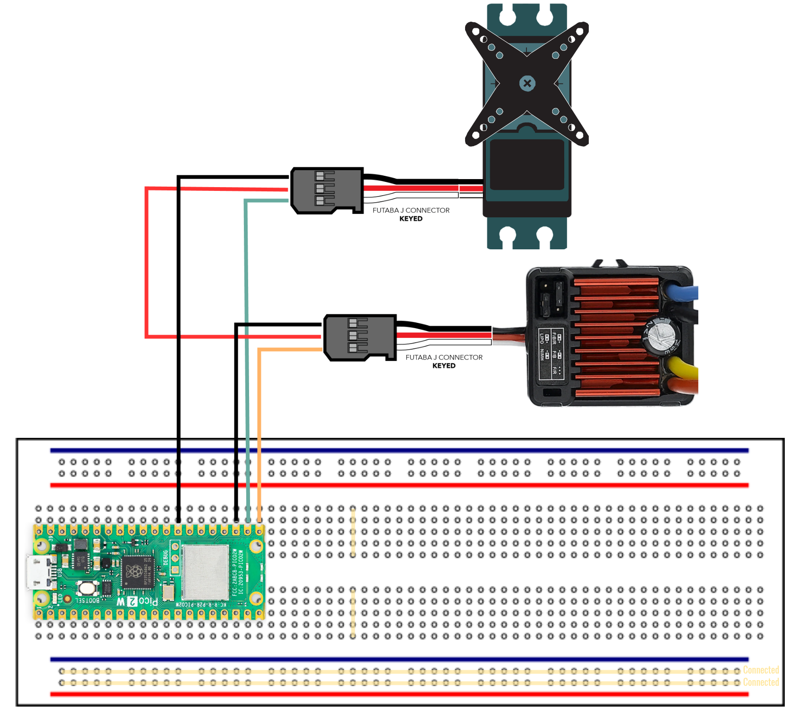
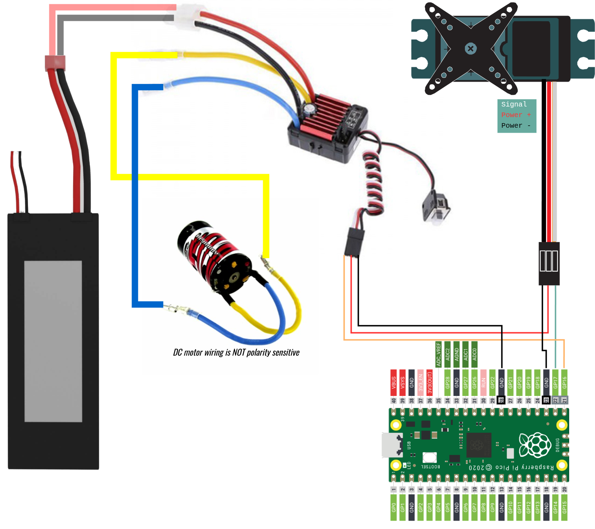
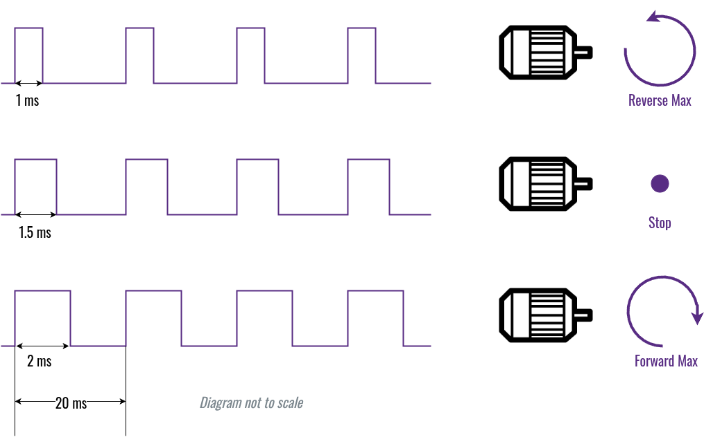
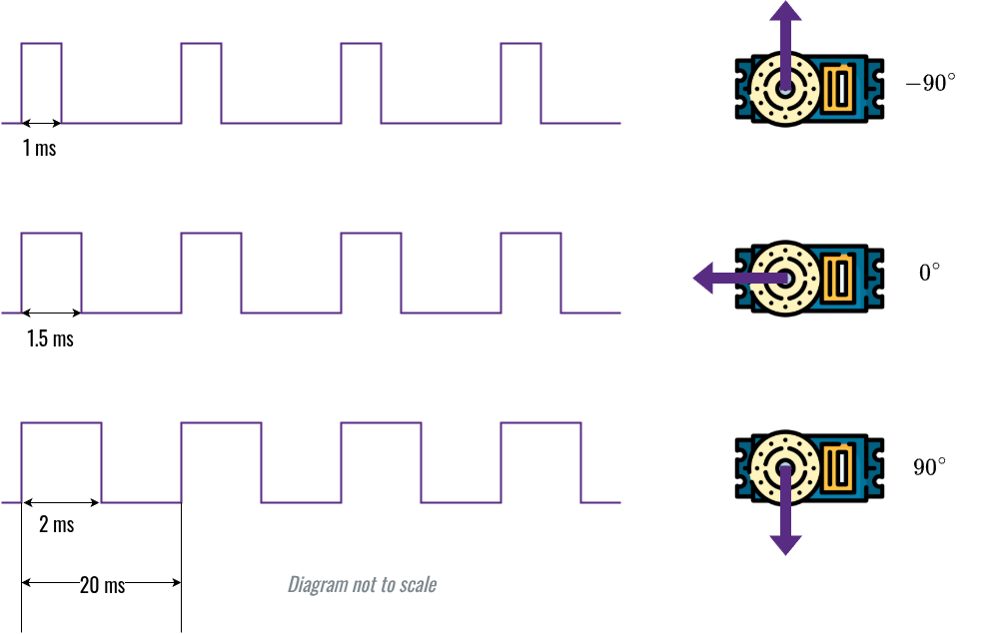

Wiring Diagrams
Breadboard Experiment with Pico, ESC and Servo
For electronics beginners, we highly recommend to set up the circuit on a breadboard following the diagram below.
Note: this is just the signal paths.

Drivetrain Wiring
Connect the battery to ESC, so that the Pico board can order it (ESC) to squeeze some juice and spin the motors.

Explain the Drivetrain
- The ESC (Electronic Speed Controller) governs the main engine motor's speed. And thus, it determines how fast the BearCar can go.
- The servo motor (underneath ESC) has a position feedback circuit built-in. Hence, it determines the steering angle of the BearCar.
- The Quicrun 1060 Brushed ESC has a BEC (Battery Elimination Circuit). It is capable of outputting 6V 3A electric energy. It is used to power the steering servo, and thus eliminates the need for another battery.
- Neither Raspberry Pi 5 nor the Pico board is powerful enough to directly drive the motors (especially the main engine). So, a battery pack like a LiPO battery is needed to satisfy the energy hungry motors.
- The Pico board uses 50Hz PWM (Pulse Width Modulation) signal to tell ESC how fast the main engine should run.

- The Pico board also uses 50Hz PWM signal to tell servo what angle it should spin to.
